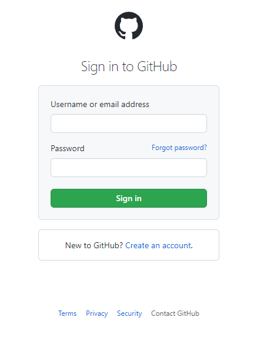

Чтобы обратно войти в аккаунт, найдите в правом верхнем углу сайта кнопку Sign in и нажмите на нее:
Откроется вот такая страница входа:

Сразу же скажем про спойлеры! Обратите внимание на заголовок – Username or email address:
Внимание, спойлеры: вы можете абсолютно одинаково войти в ваш аккаунт, как по email-у под которым вы зарегистрировались, так и по имени пользователя (username), который вы себе выбрали. Но для порядка, давайте потренируем и то и другое.